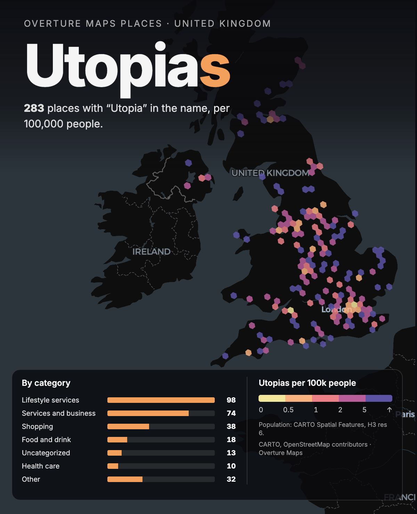

Every place in Overture Maps Places for the UK with "Utopia" in its name, binned into H3 hexagons and divided by population from CARTO Spatial Features. Lifestyle services lead with 98, then services and business with 74 and shopping with 38. Per 100,000 people the highest rates are in sparsely populated areas such as the Highlands, Lincolnshire, Norfolk and Cornwall: one business in a quiet hexagon beats a dozen in a busy one.
Built on a Sunday as a speed test of CARTO App Studio, which went into private preview the week before: the app was described in a prompt, built against live warehouse data, and refined by clicking elements in the preview. App Studio apps are not public, so this page shows the result as an image. App Studio docs.
Places: Overture Maps Places (CDLA Permissive 2.0). Population: CARTO Spatial Features, H3 resolution 6. Basemap © CARTO, © OpenStreetMap contributors. README on GitHub.